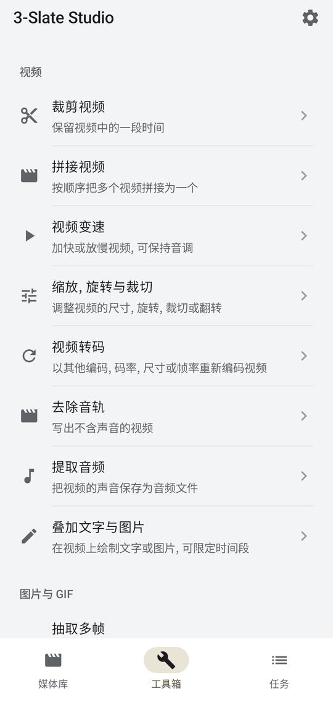
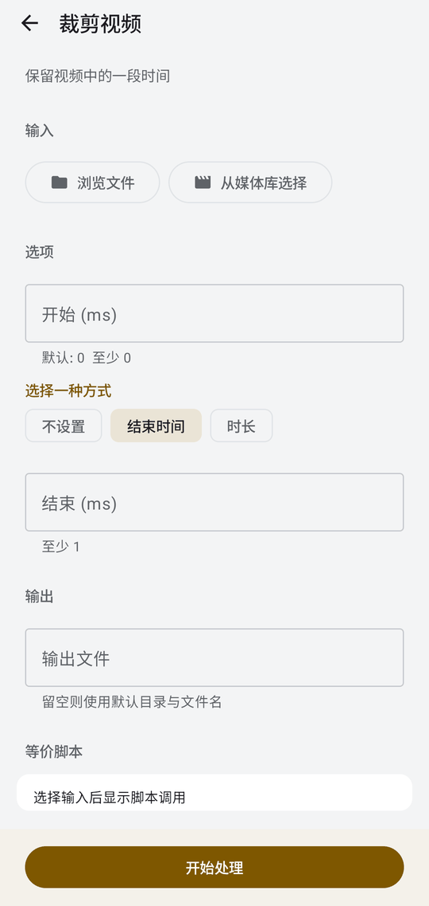
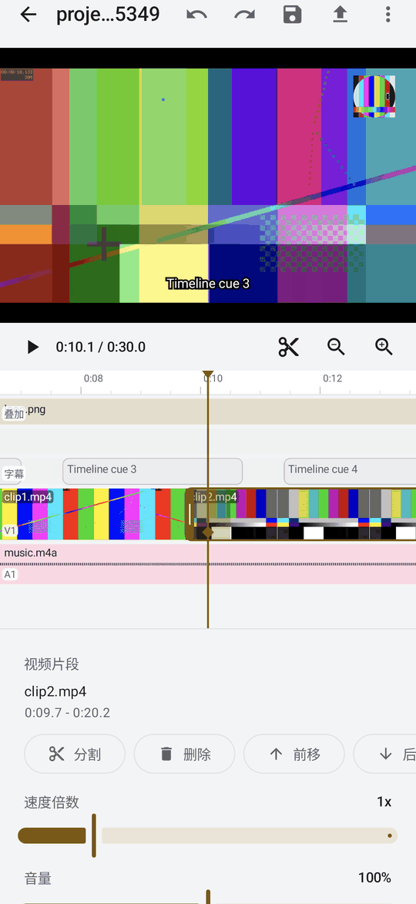

- Manual - AutoJs6 使用手册
- Runtime APIs - 运行时 API
- Project Config - 项目配置
- Q & A - 疑难解答
- Upgrade to 6.8 - 从 6.7 升级到 6.8
- Suspicious - 存疑内容
- AI - 人工智能
- App - 通用应用
- AutoJs4 Runtime - AutoJs4 运行时
- AutoJs6 - 本体应用
- Automator - 自动化
- Barcode - 条码
- Base64
- Bundled Libraries - 脚本库
- Camera - 相机
- Canvas - 画布
- Color - 颜色
- 3-Block Compose
- 3-Block Compose Designer - 设计器
- Console - 控制台
- Continuation - 续体
- Converter - 单位转换
- Crypto - 密文
- Device - 设备
- Dialogs - 对话框
- E4X
- Engines - 引擎
- EPUB - 电子书
- Events - 事件监听
- Files - 文件
- Floaty - 悬浮窗
- Flow - 流程
- Formatter - 格式化
- Gallery - 相册
- Global - 全局对象
- HTTP
- ImGui
- Images - 图像
- Installer - 安装器
- Internationalization - 国际化
- Java Runtime - Java 运行时
- Jsox - JavaScript 对象扩展
- Keys - 按键
- Kotlin Runtime - Kotlin 运行时
- Lua Runtime - Lua 运行时
- Mail - 邮件
- Media - 多媒体
- MediaInfo - 媒体信息
- Memory - 内存
- MIME - 媒体类型
- Module - 模块
- Nano ID - 随机 ID
- Notice - 消息通知
- OCR - 光学字符识别
- OpenCC - 中文转换
- Pangu - 文本间距
- PDF - PDF 文档
- Pinyin - 拼音
- Pinyin4j
- Plugins - 插件
- PowerManager - 电源管理
- Python Runtime - Python 运行时
- QR Code - 二维码
- Recorder - 记录器
- Sensors - 传感器
- Settings - 应用设置
- Shell
- Shizuku
- Speech - 语音
- SQLite - 数据库
- Standardization - 标准化
- Storages - 存储
- Sysprops - 系统属性
- Tasks - 任务
- Terminal - 终端
- Threads - 线程
- Timers - 定时器
- Toast - 消息浮动框
- TTS - 文本转语音
- UI - 用户界面
- UI Attributes - UI 布局属性
- Util - 工具
- Web - 万维网
- WorkManager - 计划任务兼容接口
- YOLO - 目标检测
- Zip - 压缩文件
- UiSelector - 选择器
- UiObject - 控件节点
- UiObjectCollection - 控件集合
- UiObjectActions - 控件节点行为
- ComposeNode - Compose 节点
- ComposeState - Compose 状态
- ComposeModifier - Compose 修饰链
- ComposeTheme - Compose 主题
- ComposeSession - Compose 会话
- ComposeFloatyWindow - Compose 悬浮窗
- Compose 组件目录
- ImguiSession - ImGui 会话
- ImguiDrawList - ImGui 绘制列表
- ImguiFloatingButton - ImGui 悬浮按钮
- ImguiComponent - ImGui 高层组件
- ImguiDataTable - ImGui 数据表格
- ImguiLogWindow - ImGui 日志窗口
- ImguiToast - ImGui 短消息
- ImguiStatsOverlay - ImGui 帧率覆盖层
- ImguiDialog - ImGui 对话框
- ImguiDialogPromise - ImGui 对话框 Promise
- ImguiTexture - ImGui 纹理
- ImguiSelectionStorage - ImGui 选择存储
- ImguiMultiSelectIO - ImGui 多选结果
- EpubBook - 电子书对象
- EpubReaderSession - 阅读器会话
- Flow - 流程对象
- FlowError - 流程错误
- GalleryViewSession - 查看器会话
- MailClient - 邮件客户端
- MailMessage - 邮件消息
- PdfDocument - PDF 文档对象
- PdfViewSession - PDF 查看器会话
- SpeechSession - 听写会话
- SpeechWakeSession - 唤醒会话
- WebSocket
- EventEmitter - 事件发射器
- ImageWrapper - 包装图像类
- App - 应用枚举类
- Color - 颜色类
- Version - 版本工具类
- Polyfill - 代码填泥
- Arrayx - Array 扩展
- Numberx - Number 扩展
- Mathx - Math 扩展
- Scripting Java - 脚本化 Java
- Class Syntax - 类语法
- Async/Await - async/await 与 continuation
- Android API Level - 安卓 API 级别
- Color Table - 颜色列表
- Glossaries - 术语
- HttpHeader - HTTP 标头
- HttpRequestMethods - HTTP 请求方法
- MimeType - MIME 类型
- NotificationChannel - 通知渠道
- Data Types - 数据类型
- Omnipotent Types - 全能类型
- Storage - 存储类
- AndroidBundle
- AndroidRect
- CryptoCipherOptions
- CryptoKey
- CryptoKeyPair
- ConsoleBuildOptions
- EpubLocator
- HttpRequestBuilderOptions
- HttpRequestHeaders
- HttpResponseBody
- HttpResponseHeaders
- HttpResponse
- InjectableWebClient
- InjectableWebView
- MailAccountOptions
- MailSearchQuery
- NoticeOptions
- NoticeChannelOptions
- NoticePresetConfiguration
- NoticeBuilder
- Okhttp3HttpUrl
- OcrOptions
- Okhttp3Request
- OpenCVPoint
- OpenCVRect
- OpenCVSize
- OpenCCConversion
- SpeechModelInfo
- SpeechRecognitionResult
AutoJs6 文档 - 6.8.0
索引 |
搜索文档
输入关键词搜索全部离线文档
3-Slate Studio#
3-Slate Studio 是 AutoJs6 的官方视频与音频加工插件 (AutoJs6-Plugin-Three-Slate-Studio). 它为脚本的 视频 (Video) 与 音频 (Audio) 模块执行加工任务, 也是一个可以独立使用的应用: 工具箱向导, 多轨时间线剪辑器, 录音, 以及把界面操作生成为等价脚本代码. 本页面自 AutoJs6 6.8.1 与 3-Slate Studio 1.0.0 起适用.
本页面介绍插件本身. 脚本 API 见 视频 (Video) 与 音频 (Audio); 脚本的录屏与录音 (video.record, audio.record) 由 AutoJs6 完成, 不需要本插件.
安装与启用#
- 在插件中心的官方插件库安装 3-Slate Studio, 安装向导把它列在 "工具" 分类中. 插件为适用于全部设备的单个安装包, 需要 Android 7.0 (API 24) 或更高版本.
- 插件需要 AutoJs6 6.8.1 (内部版本 6641) 或更高版本. 较旧的 AutoJs6 在插件中心把它显示为不兼容, 脚本调用失败于
PLUGIN_INCOMPATIBLE. - 安装后插件默认处于启用状态. 在插件中心关闭后, 脚本的加工方法失败于
PLUGIN_DISABLED. - 从桌面图标或插件中心的 "打开插件" 进入插件界面, 按提示授予 "所有文件访问" 权限.
权限#
插件的权限属于插件自身, 与 AutoJs6 已获得的权限相互独立.
| 权限 | 用途 |
|---|---|
| 所有文件访问 (Android 10 及以下为存储读写) | 读写脚本与界面指定的文件, 写入默认输出目录; 未授权时加工失败于 STORAGE_PERMISSION_DENIED, 插件打开授权页面 |
| 读取视频与音频 (Android 13 及以上) | 在媒体库中列出媒体文件 |
| 通知 (Android 13 及以上) | 长任务与录音的前台服务通知 |
| 麦克风 | 插件界面的录音 |
| 屏幕捕获确认 | 插件界面录制设备内部声音 (内录与混合), 每次录音时由系统确认 |
| 前台服务 | 运行满 10 秒的加工任务 (带进度通知), 以及录音 (熄屏后继续) |
| 网络 | 1.0.0 只用于检查更新; 1.1.0 起用于下载 FFmpeg 大库 |
- 插件的能力服务受 AutoJs6 插件权限保护, 其他应用无法直接调用.
- 未指定输出路径时, 输出只写入
Movies,Music与Pictures下的3-Slate Studio目录, 见 默认输出. - 系统限制插件后台运行时 (例如部分 HyperOS 设备默认限制新装应用), 长任务照常完成, 但可能没有进度通知, 熄屏后也可能被推迟. 设置页的 "电池使用" 一项显示当前状态, 并可跳转到系统设置改为 "不受限制".
界面#
首页有三个标签: "媒体库", "工具箱" 与 "任务". 手机竖屏时为底部导航栏, 宽度 600 dp 及以上 (如平板) 时为侧边导航栏.

媒体库#
列出 Movies, Music 与 Pictures 下的 3-Slate Studio 目录, AutoJs6 的录制目录 (Movies/AutoJs6, Music/AutoJs6) 以及在设置中添加的目录中的媒体, 可按视频, 音频与图片筛选. 列表来自系统媒体库, 插件不扫描整个存储. 详情页显示预览与媒体信息, 可以打开, 分享, 重命名与删除 (只限这些目录中的文件), 并可 "送进工具箱" 继续加工.
工具箱#
每个加工方法对应一个向导: 裁剪, 拼接, 变速, 缩放 / 旋转 / 裁切, 转码, 去除音轨, 提取音频, 叠加文字与图片, 抽帧, 单帧, 缩略图, 转 GIF, 烧录字幕, 字幕格式转换, 以及音频的裁剪, 拼接, 混音, 音量, 格式转换与变速. 表单的字段, 默认值与取值范围与脚本选项一致, 提交前用与脚本相同的规则检查.

向导提交的任务与脚本的任务进入同一个队列. 完成后的结果页显示输出路径, 媒体信息, 打开与分享按钮, 以及等价的脚本代码, 见 代码生成.
任务#
列出插件界面与脚本提交的加工任务 (脚本任务标明来源), 显示进度, 阶段与失败原因, 可以取消未完成的任务. 同时运行的任务数由设置页的 "任务并发数" 决定.
时间线剪辑器#
从首页顶栏或工具箱的 "时间线剪辑" 分组新建或打开工程. 剪辑器支持多条视频轨, 音频轨, 叠加轨与字幕轨: 拖入, 移动, 两端裁剪与分割片段, 吸附到片段边缘与播放头, 调整片段的速度与音量, 在片段之间加入 7 种转场, 编辑文字与图片叠加物 (可在预览上拖动位置), 编辑字幕 (列表, 时间, 样式, 导入 SRT / ASS, 导出 SRT), 双指缩放时间线, 撤销与重做 (至多 50 步).

- 工程保存为
.slate.json, 内容是 时间线 对象加上界面状态. 插件有 "所有文件访问" 权限时保存在Movies/3-Slate Studio/Projects, 否则保存在插件私有目录. - 预览由插件自行绘制, 转场与叠加按导出的公式近似显示; 导出结果以 video.compose 为准.
- 导出时进入任务队列, 结果页给出等价的
video.compose代码. - 阿拉伯语等从右到左的界面中, 时间线, 预览画面与播放控件保持从左到右, 与导出画面一致.
录音#
首页顶栏的麦克风按钮或工具箱顶部的 "录制" 打开录音页:
- 音源: 麦克风, 内录 (其他应用播放的声音) 或两者混合; 内录与混合只在 Android 10 及以上显示, 开始前由系统确认屏幕捕获. 不允许被录制的应用的声音为静音.
- 格式 M4A 或 WAV, 可选采样率, 声道与码率, 默认值与 audio.record 相同; 可设最长时长.
- 录音中显示电平与时长 (不含暂停), 可暂停, 继续与停止; 通知栏同样提供这些按钮, 熄屏后继续录音.
- 录音保存为
Music/3-Slate Studio/slate-record-<yyyyMMdd-HHmmss>.<ext>(或设置页指定的输出目录) 并登记媒体库, 可 "送进工具箱" 继续加工, 并给出等价的audio.record代码.
插件的录音使用插件自己的麦克风权限与屏幕捕获授权, 与脚本的 audio.record (使用 AutoJs6 的权限) 相互独立.
设置#
- 外观: 语言, 夜间模式, 主题色 (可跟随 AutoJs6), 启动器图标.
- 媒体与输出: "输出目录" (只影响工具箱与录音页, 不改变脚本的默认输出), "默认视频编码" (H.264 / H.265, 设备没有的编码器不可选), "默认码率策略" (自动 / 高画质 / 小文件, 用于工具箱未填写码率时), "硬件编码器偏好" (自动 / 优先硬件 / 优先软件) 与 "任务并发数" (1 或 2, 默认 2), 后两项对脚本的任务同样生效; "媒体库目录" 管理媒体库额外列出的目录.
- 权限与后台: 所有文件访问, 通知权限, 电池使用.
- 关于: 版本, 许可, 发行历史与更新检查 (查询 AutoJs6 官方插件索引).
代码生成#
工具箱向导, 时间线剪辑器与录音页的结果都附有可直接运行的等价脚本 (video.* / audio.* 调用), 可以复制. 装有 AutoJs6 6.8.1 (内部版本 6641) 或更高版本时, 另有 "在 AutoJs6 中打开" 按钮: AutoJs6 在编辑器中把代码打开为一个未保存的新脚本, 保存前不写入任何文件. 较长的代码 (超过 512 KiB 或 200000 个字符) 经插件的文件提供器发送, 至多 4 MiB; 更长的代码只能复制.
FFmpeg 大库 (计划中)#
3-Slate Studio 1.1.0 计划提供可选的 FFmpeg 大库 (按 LGPL-2.1-or-later 构建, 含 libass): 只在用户请求时按设备 ABI 下载, 校验 SHA-256 后由插件动态加载, 不打包进 APK, 随附自己的许可声明与对应源码的获取位置. 安装后增加 MP3, WebM 与 MKV 输出, FFmpeg 命令透传 (video.ffmpeg) 与 ASS 字幕的完整渲染; 未安装时依赖大库的调用将失败于 LIBRARY_MISSING. 不安装大库时, 1.0.0 的全部功能照常可用. 迁移第三方 FFmpeg 插件的写法见 FFmpeg 命令透传.
FFmpeg 支持的部分编解码器 (例如 H.265 / HEVC 与 AAC) 在某些国家或地区可能受专利保护. 大库仅为方便使用而提供, 不附带任何专利许可.
许可#
插件源码采用 MPL-2.0 许可. 1.0.0 的依赖以 Apache-2.0 为主 (Jetpack Media3, Jetpack Compose, Kotlin), 另有 MIT 许可的 checker-qual; 第三方组件与许可全文见插件的 "关于" 页面. 1.0.0 的安装包不含 FFmpeg.
相关链接#
- 视频 (Video) 与 音频 (Audio): 脚本 API.
- 插件 (Plugins): 提供脚本模块的官方插件.
- 从 6.7 升级到 6.8: 插件的安装与常见问题.